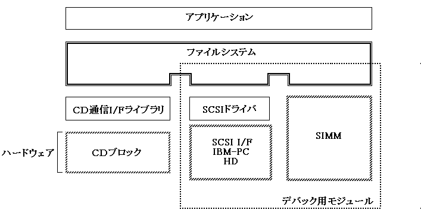

★PROGRAMMER'S GUIDE
★ファイルシステムライブラリ
★PROGRAMMER'S GUIDE
★ファイルシステムライブラリ
■
｜
進む▼
ファイルシステムライブラリ
1．概要
- ここでは、CD上のファイルをアクセスするためのライブラリについて説明します。
1.1 特徴
- 本ライブラリは以下の特徴を持っています。
- (1)対象CD-ROM
- ISO9660レベルのファイルアクセスが可能です。
- CD-ROM XAのサブヘッダ情報を利用したアクセスについては本ライブラリではカバーしません。
- (2)データのバッファリング
- CDブロックのバッファ管理機構を前提としたアクセスを行います。
- 単純なファイル読み込みの他にバッファを利用した先読みが可能です。
- (3) ファイル識別子
- ファイル識別子(ディレクトリ内の順序番号)によるアクセスを基本とします。
- ディレクトリの検索による速度の低下をなくします。>
- ファイル名によるアクセスは、ファイル名からファイル識別子への変換機能を使うことによって可能です。
- (4)開発サポート機能
- 開発サポート機能としてメモリファイルとDOSファイルのアクセスができます。
- 少量データであればメモリファイルでCD上のファイルを代替できます。
- SCSI経由で、IBM-PC上のDOSファイルをメモリファイルと同様にアクセスすることができます。
SIMMに入らない大きさのデータでもCD上のファイルを代替できます。
- 製品組み込み用と開発サポート機能を含んだものの２種類のライブラリを提供します。
1.2 機能概要
- ここでは、ファイルシステムライブラリの機能について概要を述べます。本ライブラリの機能は次の６種に分類されます。
- (1)ディレクトリ操作
- ライブラリ初期化、ディレクトリ情報の読み込み、カレントディレクトリ設定など以下の機能を提供します。
関数 | 機 能 |
|---|
GFS_Init | ライブラリの初期化とCDのマウント処理 |
GFS_LoadDir | ディレクトリ情報の読み込み |
GFS_SetDir | カレントディレクトリの設定 |
GFS_NameToId | ファイル名→ファイル識別子の変換 |
GFS_IdToName | ファイル識別子→ファイル名の変換 |
GFS_GetDirInfo | ディレクトリ情報の取得 |
GFS_Reset | ファイルシステムのリセット |
- (2)ファイル操作
- ファイルのオープン、クローズ、シークなど、次に示したファイルの一般的な操作を行います。
関数 | 機能 |
|---|
GFS_Open | ファイルのオープン |
GFS_Close | ファイルのクローズ |
GFS_Seek | アクセスポインタの移動 |
GFS_Tell | アクセスポインタの取得 |
GFS_IsEof | アクセスポインタがファイル末にあるかチェック |
GFS_ByteToSct | バイト単位→セクタ単位の変換 |
GFS_GetFileSize | ファイルサイズの取得 |
GFS_GetFileInfo | ファイル情報の取得 |
GFS_GetNumCdbuf | CDバッファ区画のセクタ数の取得 |
- (3)完了復帰型読み込み
- ファイルからデータを読み込みます。このとき、データ読み込みが完了するまで関数から制御が戻りません。
関数 | 機能 |
|---|
GFS_Fread | オープンしたファイルからデータを読込みます。 |
GFS_Load | ファイル識別子を指定してデータを読込みます。 |
- (4)即時復帰型読み込み
- リクエスト関数とサーバ関数によって、ファイルからデータを読み込みます。リクエスト関数から発行された要求を、サーバ関数が処理単位ごとに処理します。
サーバ関数は繰返し呼び出す必要があります。サーバ関数呼び出しループの中にアプリケーション処理を挿入することにより、データ読み込みが完了するまでの間にアプリケーションの処理を実行できます。
関数 | 機能 |
|---|
GFS_NwFread | データ読み込みリクエストの発行 |
GFS_NwCdRead | CDバッファへの読み込みリクエストの発行 |
GFS_NwIsComplete | 読み込み処理の完了チェック |
GFS_NwStop | 読み込み処理の中止 |
GFS_NwGetStat | アクセス状態の取得 |
GFS_NwExecOne | 一つのファイルに対するサーバ関数 |
GFS_NwExecServer | 複数ファイルに対するサーバ関数 |
- (5)読み込みパラメータ設定
- 完了復帰および即時復帰の読み込み関数に対して、各種パラメータを設定します。CDバッファの使い方、転送方式(DMA,CPUなど)、転送単位を変更できます。
関数 | 機能 |
|---|
GFS_SetGmode | CDバッファからの取り出し方式設定 |
GFS_SetTmode | 転送方式の設定 |
GFS_SetReadPara | CDバッファへの読み込み単位設定 |
GFS_SetTransPara | CDバッファからの転送単位設定 |
GFS_SetTrFunc | 転送関数の登録 |
GFS_StartTrans | 転送関数における転送開始 |
- (6)その他
- CDピックアップの制御、エラー処理関数の登録とエラー状態取得機能を提供します。エラー処理関数はエラー発生時に呼び出されます。
また、DSSシステム使用時には CD-DAトラック番号の変換機能を提供します。
関数 | 機能 |
|---|
GFS_CdMovePickup | CDピックアップの移動 |
GFS_SetErrFunc | エラー処理関数の登録 |
GFS_GetErrStat | エラー状態の取得 |
GFS_ConvTno | トラック番号の変換 |
1.3 モジュール構成
- ハードウェア、他ソフトウェアに対する本ライブラリの位置づけを図1.1に示します。点線部分はデバッグ用ライブラリに含まれるモジュールです。
図1.1 モジュール構成図

- 本ライブラリを使うには以下のライブラリを同時にリンクする必要があります。
- SHCNPIC.LIB
SH7600用ポジションインディペンデントコード非対応ライブラリ
- SEGA_CDC.LIB
CD通信インタフェースライブラリ
- SEGA_DMA.LIB
DMAライブラリ
- SEGA_CSH.LIB
キャッシュライブラリ
■
｜
進む▼
★PROGRAMMER'S GUIDE
★ファイルシステムライブラリ
Copyright SEGA ENTERPRISES, LTD., 1997